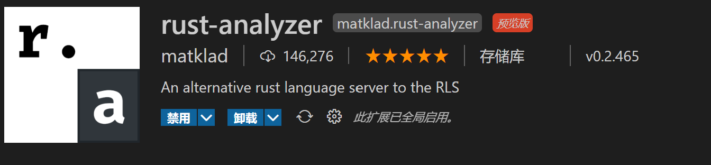

Rust环境配置
安装C++build tool
安装VisualStudio
在单个组件选项卡中安装如下组件

安装Rust
Rust 中文官网 Rust-lang 下载 rustup-init.exe
配置环境变量
打开系统环境变量
在环境变量里新建 RUSTUP_HOME ，对应 rustup 的安装目录在环境变量里配置，以下是我的配置

新建CARGO_HOME ，对应 cargo 的安装目录

因为Rust的服务器在国外，安装速度较慢，所以我们可以考虑使用镜像源
新建 RUSTUP_DIST_SERVER，其中的内容为 https://mirrors.ustc.edu.cn/rust-static

新建 RUSTUP_UPDATE_ROOT，其中的内容为https://mirrors.ustc.edu.cn/rust-static/rustup

安装 Rust
运行 rustup-init.exe

输入 1 后回车即可
完成安装

验证安装

配置开发环境
安装编辑器
这里推荐vscode
安装插件
Rust官方插件

如果您喜欢折腾，我更推荐这一款 rust-analyer
中文界面插件

AI代码提示插件

crate管理插件

TOML支持插件

至此rust环境配置完毕
rust-analyer

简介
rust-analyer(简称RA)是由Rust社区维护的RLS 2.0(自封的)，但它以后将会并入或是说取代官方的RLS。RLS有的它更好，RLS没有的它还有，甚至可以提示第三方库的代码，所以更推荐安装这一个。更多内容可以浏览它官网的用户手册
安装
安装插件之后，将会自动下载它服务器的二进制文件，点击下载即可
要使用它，需要明确何为cargo workspace，RA会检查根目录下的Cargo.toml文件，文件不像一般的cargo项目，在这里您需要指定workspace
在vscode中新建文件夹，在该文件夹下新建Cargo.toml文件，在文件内写入
[workspace]
members = []
如果要新建项目，现在该文件的members后的方括号内写入"项目名"， ，再在顶目录运行cargo new 项目名，新项目内将不会生成Cargo.lock文件和targe文件夹，而是与顶层目录共用这些文件，可以避免重复的编译
关于workspace，会在后续章节讲解
快速开始
上一章中，我们已经安装好了Rust，配置好了编辑器，现在可以开始写代码了。 本章的目的是让您迅速上手Rust语言，所以您不必理解全部内容，本章所有知识点均会在以后的章节再次详细讲解
Hello Rust
HelloWorld
学习一门语言的传统都是打印 Hello World 下面我们创建一下 Rust 的 Helloworld 程序
创建一个Rust文件
打开 vscode，新建一个文件夹用于存放我们所有的代码，在这个文件夹下新建 hello_world 文件夹，在里面新建一个 main.rs文件（Rust的习惯后缀名为 .rs虽然别的后缀名也能通过编译）
关于文件命名，Rust采用蛇形命名法，如果名字有多个单词，无需有大写字母，而是采用_来分隔每一个单词，如hello_world.rs，尽量避免使用ASCII字符以外的字符，不要以数字开头
编写第一个Rust程序
在main.rs文件中输入Rust代码
fn main() { println!("Hello World!"); }
编译并运行程序
在main.rs文件上单击右键，选择 在终端中打开，然后执行以下命令
rustc main.rs
在刚刚的终端中输入
main.exe
终端上会输出
Hello World!
分析这个程序
好了，我们已经创建了第一个Rust程序了，但这段代码到底是什么意思呢？现在让我们来分析一下：
-
fn表示定义一个 函数，main是这个函数的名字，花括号{}里的语句则是这个函数的内容，Rust 要求所有函数体都要用花括号包裹起来。一般来说，将左花括号与函数声明置于同一行并以空格分隔，是良好的代码风格 -
名字为 main的函数在Rust里有特殊的作用，即程序的入口，程序就是从这里开始执行的
-
println!()是一个宏，它的功能是打印圆括号()中的内容并换行，!是宏的标志，如果是调用函数，则没有!，关于宏我们会在以后的章节讲解 -
在Rust中，语句的末尾一般用分号
;作为结束标志 -
Rust程序的编译与运行是彼此独立的，在运行 Rust 程序之前，必须先使用 Rust 编译器编译它，即输入 rustc 命令并传入源文件名称
-
Rust 是一种 预编译静态类型语言，这意味着你可以编译程序，并将可执行文件送给其他人，他们甚至不需要安装 Rust 就可以运行。这与解释性语言不同
仅仅使用 rustc 编译简单程序是没问题的，不过随着项目的增长，rustc就会难以满足需要，这种时候就需要包管理工具了，接下来介绍这个强大的工具—Cargo
Hello Cargo
要系统的学习Rust语言了，首先让我们来系统的认识一下Rust的包管理器—Cargo
cargo简介
代码管理对于编程来说一直是一个重要的问题，各种不同的语言也都会采用不同的代码管理器，Rust作为一枚现代语言，综合了现有语言管理工具的优点，为我们提供了一个大杀器—— Cargo
作为rust的代码组织管理工具，cargo提供了一系列的工具，从项目的建立、构建到测试、运行直至部署，为rust项目的管理提供尽可能完整的手段。同时，与rust语言及其编译器rustc本身的各种特性紧密结合。
cargo入门
在我们安装Rust的时候就已经安装好了cargo
创建项目
在我们存放代码的文件夹上单击右键，选择 在终端中打开，输入以下命令
cargo new hello_cargo --bin
--bin是一个参数，代表这是一个bin包，Cargo默认创建bin包，所以该参数可以不加
查看目录结构
hellocargo文件夹下有一个src 和一个 Cargo.toml 文件，src文件夹下有一个 main.rs文件，它也在 hello_cargo 目录初始化了一个 git 仓库，以及一个 .gitignore 文件
├── Cargo.toml
└── src
└── main.rs
编辑 src下的main.rs文件
cargo初始化的main.rs里会有一些默认内容，我们把它改为
fn main() { println!("Hello, Cargo!"); }
编译和运行
在hellocargo文件夹上单击右键，选择在在 终端中打开，输入以下命令
cargo build
cargo build --release 这个是优化编译
这两个命令分别会在以下文件夹下生成可执行文件
cargo run 编译并运行
cargo run --release 同上
./target/debug/hellocargo.exe
./target/release/hellocargo.exe
基于Cargo的Rust项目解构
cargo.toml和cargo.lock文件总是位于项目根目录下
源代码位于src目录下
默认的库入口文件是src/lib.rs
默认的可执行程序入口文件是src/main.rs
其他可选的可执行文件位于src/bin/*.rs(这里每一个rs文件均对应一个可执行文件)
外部测试源代码文件位于tests目录下
示例程序源代码文件位于examples
基准测试源代码文件位于benches目录下
Cargo.toml与Cargo.lock
cargo.toml和cargo.lock是cargo项目代码管理的核心两个文件，cargo工具的所有活动均基于这两个文件。
cargo.toml是cargo特有的项目数据描述文件，存储了项目的所有信息
cargo.lock不需要直接修改，是cargo工具根据同一项目的toml文件生成的项目依赖详细清单文件
Cargo.toml
[package]
name = "hello_cargo"
version = "0.1."
authors = ["YourName "]
[dependencies]
TOML是Rust的官方配置文件格式，由像[package]或[dependencies]这样的段落组成，每一个段落又由多个字段组成，这些段落和字段就描述了项目组织的基本信息。
package 下面的 name 字段表明项目的名称。 如果您发布 crate，那么 crates.io 将使用此字段标明的名称。 这也是编译时输出的二进制可执行文件的名称
version 字段是使用语义版本控制的 crate 版本号
authors 字段表明发布 crate 时的作者列表
dependencies 这部分可以让你为项目添加依赖，依赖段落包括一下几种：
-
基于rust官方仓库，通过版本说明来描述：
-
基于项目源代码的git仓库地址，通过URL来描述：
-
基于本地项目的绝对路径或者相对路径
简单的示例：
[dependencies]
typemap = "0.3"
plugin = "0.2*"
hammer = { version = "0.5.0"}
color = { git = "https://github.com/bjz/color-rs" }
geometry = { path = "crates/geometry" }
定义集成测试用例
cargo另一个重要的功能，即将软件开发过程中必要且非常重要的测试环节进行集成，并通过代码属性声明或者toml文件描述来对测试进行管理。其中，单元测试主要通过在项目代码的测试代码部分前用#[test]属性来描述，而集成测试，则一般都会通过toml文件中的[[test]]段落进行描述。 例如，假设集成测试文件均位于tests文件夹下，则toml可以这样来写
[[test]]
name = "test1"
path = "tests/test1.rs"
[[test]]
name = "test2"
path = "tests/test2.rs"
上述例子中，name字段定义了集成测试的名称，path字段定义了集成测试文件相对于本toml文件的路径。 看看，定义集成测试就是如此简单。 需要注意的是:
-
如果没有在Cargo.toml里定义集成测试的入口，那么tests目录(不包括子目录)下的每个rs文件被当作集成测试入口
-
如果在Cargo.toml里定义了集成测试入口，那么定义的那些rs就是入口，不再默认指定任何集成测试入口.
定义示例和可执行文件
example用例的描述以及bin用例的描述也是cargo的常用功能
[[example]]
name = "examlpe1"
path = "examples/examlpe1.rs"
[[bin]]
name = "bin1"
path = "bin/bin1.rs"
对于[[example]]和[[bin]]段落中声明的examples和bins，需要通过cargo run --example NAME或者cargo run --bin NAME来运行，其中NAME对应于你在name字段中定义的名称
其他Cargo命令
cargo clean：清理target文件夹中的所有内容
cargo update：根据toml描述文件重新检索并更新各种依赖项的信息，并写入lock文件，例如依赖项版本的更新变化等等
cargo install：可用于实际的生产部署
cargo fmt：代码格式化工具
从这章开始，请把Cargo当作习惯，对于简单项目， Cargo 并不比 rustc 提供了更多的优势，不过随着开发的深入，终将证明其价值
变量、常量与原生类型
变量绑定
Rust 通过静态类型确保类型安全。变量绑定可以在声明时说明类型，不过在多数情况下， 编译器能够从上下文推导出变量的类型，从而大大减少了类型说明的工作。
使用 let 绑定操作可以将值绑定（bind）到变量
fn main() {
let a = 5;//类型推断
let b: i32 = 10;//显式声明
let c = 10i32;//另一种显式声明，value+type
let d = c;//整数类型默认实现了Copy，所以下面变量c仍可使用
//a = 10; 报错，变量默认不可更改
// 编译器会对未使用的变量绑定产生警告；可以给变量名加上下划线前缀来消除警告。
let _unused = 3u32;
}
可变绑定
虽然变量默认不可变，但不可以把不可变变量理解为常量。在变量名前加上 mut关键字，即可让变量变为可变变量
fn main() {
let mut a :f64 = 2.0;
pritnln!("{}",a);
//改变a的绑定
a = 5.0;
println!("{}",a);
//重新将a绑定为不可变
let a = a;//这是Rust的遮蔽特性，允许声明同名变量来遮蔽先前的变量
}
常量
Rust 有两种常量，可以在任意作用域声明，包括全局作用域。它们都需要显式的类型声明：
-
const：不可改变的值（通常使用这种）。 -
static：具有'static生命周期的，static mut关键字可生命可变常量，但不等同于变量
有个特例就是 "string" 字面量。它可以不经改动就被赋给一个 static 变量，因为它 的类型标记：&'static str 就包含了所要求的生命周期 'static。其他的引用类型都 必须特地声明，使之拥有'static 生命周期。这两种引用类型的差异似乎也无关紧要，因 为无论如何，static 变量都得显式地声明。（将会在10.可变性、所有权、租借和生命周期中详细讲解）
// 全局变量是在在所有其他作用域之外声明的。
static LANGUAGE: &'static str = "Rust";
const THRESHOLD: i32 = 10;
fn is_big(n: i32) -> bool {
// 在一般函数中访问常量
n > THRESHOLD
}
fn main() {
let n = 16;
// 在 main 函数（主函数）中访问常量
println!("This is {}", LANGUAGE);
println!("The threshold is {}", THRESHOLD);
println!("{} is {}", n, if is_big(n) { "big" } else { "small" });
// 报错！不能修改一个 `const` 常量。
THRESHOLD = 5;
//^ 注释掉此行
}
let解构
let不只是用于声明变量、绑定变量，实际上let是一种匹配模式，拥有十分强大的功能
例如：
fn main() {
let (a, mut b): (bool, bool) = (true, false);
println!("a = {:?}, b = {:?}", a, b);
}
原生类型
在上面的例子中，我们见到了 i32 f64 bool等数据类型，它们是Rust的原生类型，Rust的原生类型有以下几类：
-
布尔类型：只有两个值，
true和false -
字符类型：表示单个Unicode字符，储存为
u8 -
数值类型：有符号整型(
i8i16i32i64i128isize)、无符号整型(u8u16u32u64u128usize)和浮点型(f32f64) -
字符串类型：其底层为不定长类型
str，更常用的是字符串切片&str和堆分配字符串String，字符串切片是静态的，有固定大小且不可改变，堆分配字符串是可变的 -
数组：有固定大小，且元素为同一类型，可表示为
[T; N] -
切片：引用数组的一部分数据且无需复制，可表示为
&[T] -
元组：有固定大小，元素类型可不同的有序列表
-
指针：最底层是裸指针
*const T和*mut T，解引用它们是不安全的需要放到unsafe块里，详见21.Unsafe -
函数：本质是一个函数指针
-
元类型：其唯一的值是
()
//如果没有必要，以后的示例将不会有 fn main() {} 等
//下面按顺序展示一下这些类型
let t = true;
let f: bool = false;
let c = 'c';
let x = 100;
let y: u32 = 123_456;
let z: f64 = 1.2e+3;// 浮点数可用科学计数法
let zero = z.abs_sub(123.4);
let bin = 0b111_000;
let oct = 0o1234_5670;
let hex = 0xf23a9;
let str = "hello world";
let mut string = str.to_string();
let a = [0, 1, 2, 3];
let b = &a[1..3];
let mut ten_zeros: [i64;10] = [0; 10];
let tuple: (i32,&str) = (50, "hello");
let (fifty, _) = tuple;
let hello = tuple.1;
let x = 5;
let p = &x as *const i32;
let point_at = unsafe{*p};
fn func(x:i32) -> i32 {
x
}
let function: fn(i32) -> i32 = func;
有几点是需要特别注意的：
-
数值类型可以使用
_来增加可读性。 -
Rust支持单字节字符
b'H'和单字节字符串b"Hello"，仅限于ASCII字符。 使用r#"..."#标记来表示原始字符串，不需要对特殊字符进行转义。 -
使用
&符号将String类型转换成&str类型很容易， 但是使用to_string()方法将&str转换到String类型涉及到分配内存， 除非很有必要否则不要这么做。 -
数组的长度是不可变的，动态的数组称为Vec，可以使用宏
vec!创建。 -
元组可以使用
==和!=运算符来判断是否相同。 -
不多于32个元素的数组和不多于12个元素的元组在值传递时是自动复制的。
-
Rust不提供原生类型之间的隐式转换，只能使用
as关键字显式转换。 -
可以使用
type关键字定义某个类型的别名，并且应该采用驼峰命名法，这在解决非常长的变量名时非常有用，最常见的时impl块中的Self别名。
let decimal = 65.4321_f32;
let integer = decimal as u8;
let character = integer as char;
type Color = (u8, u8, u8);
type Point = (u8, u8);
数组、动态数组与字符串
在上一节中，我们了解到了Rust的原生类型，其中有一些类型比较复杂，下面让我们具体的学习一下这些类型
数组和动态数组
数组与切片
数组用于储存相同类型的数据集，[T; N] 表示一个T类型，N个元素的数组，数组的大小必须固定，需要在编译的时候确定下来
let mut array :[i32; 3]= [0; 3];
array[1] = 1;
array[2] = 2;
for x in &array {
println!("{}",x);
}
array[1] = 2的意思是将索引为 1的元素的值改为 2，需要注意的是，Rust中，数组第一个元素的索引为 0。 for x in &array {...}是一个循环，这个循环将会打印 0 1 2，关于循环的内容将会在2.5.控制流提到
切片（slice）类型和数组类似，但其大小在编译时是不确定的。切片是一个双字对象，第一个字是一个指向数据的指针，第二个字是切片的长度。这 个“字”的宽度和 usize 相同，slice 可以用来借用数组的一部分。slice 的类型标记为 &[T]
use std::mem;
// 此函数借用一个 slice
fn analyze_slice(slice: &[i32]) {
println!("该切片的第一个元素是: {}", slice[0]);
println!("这个切片有 {} 个元素", slice.len());
}
fn main() {
// 定长数组（类型标记是多余的）
let xs: [i32; 5] = [1, 2, 3, 4, 5];
// 所有元素可以初始化成相同的值
let ys: [i32; 500] = [0; 500];
// 下标从 0 开始
println!("first element of the array: {}", xs[0]);
println!("second element of the array: {}", xs[1]);
// `len` 返回数组的大小
println!("array size: {}", xs.len());
// 数组是在栈中分配的
println!("array occupies {} bytes", mem::size_of_val(&xs));
// 数组可以自动被借用成为 slice
println!("borrow the whole array as a slice");
analyze_slice(&xs);
// slice 可以指向数组的一部分
println!("borrow a section of the array as a slice");
analyze_slice(&ys[1 .. 4]);
// 越界的下标会引发致命错误（panic）
println!("{}", xs[5]);
}
动态数组Vec
动态数组是一种基于堆内存申请的连续动态数据类型，拥有 O(1) 时间复杂度的索引、压入（push）、弹出（pop)
//创建空Vec
let v: Vec<i32> = Vec::new();
//使用宏创建空Vec
let v: Vec<i32> = vec![];
//创建包含5个元素的Vec
let v = vec![1, 2, 3, 4, 5];
//创建十个零的Vec
let v = vec![0; 10];
//创建可变的Vec，并压入元素3
let mut v = vec![1, 2];
v.push(3);
//创建拥有两个元素的Vec，并弹出一个元素
let mut v = vec![1, 2];
let two = v.pop();
//创建包含三个元素的可变Vec，并索引一个值和修改一个值
let mut v = vec![1, 2, 3];
let three = v[2];
v[1] = v[1] + 5;
字符串
Rust里有两种字符串类型， String和 str
&str
str类型很少使用， &str类型使用的较多，本质是 [u8]类型的切片 &[u8]，是一种大小固定的类型，常见的的字符串字面值就是 &'static str类型，这是一种带有 'static生命周期的 &str类型，在这里您不必深入了解
let hello = "Hello, world!";
let hello: &'static str = "Hello, world!";
String
String是一个带有的 vec:Vec<u8>成员的结构体，您可以理解为 str类型的动态形式。 它们的关系相当于 [T]和 Vec<T>的关系。所以 String 类型也有压入和弹出
// 创建一个空的字符串
let mut s = String::new();
// 从 `&str` 类型转化成 `String` 类型
let mut hello = String::from("Hello, ");
// 压入字符和压入字符串切片
hello.push('w');
hello.push_str("orld!");
// 弹出字符。
let mut s = String::from("foo");
assert_eq!(s.pop(), Some('o'));
assert_eq!(s.pop(), Some('o'));
assert_eq!(s.pop(), Some('f'));
assert_eq!(s.pop(), None);
2.4.结构体与枚举
结构体
结构体 是一种记录类型，所包含的每个 域 都有一个名称。 每个结构体也都有一个名称，通常以 大写字母 开头，使用 驼峰命名法。元组结构体是由 元组 和 结构体 混合构成，元组结构体有名称，但是它的域没有。当元组结构体只有一个域时，称为新类型。没有域的结构体，称为类单元结构体 。结构体中的值默认是不可变的，需要给结构体加上mut使其可变
struct Student {
name: String,
grade: i8,
class: i8,
id: i8,
}
let mut bob = Student {
name: String::from("Bob"),
class: 1,
grade: 2,
id: 123,
};
bob.grade = 1;
struct Color(u8, u8, u8);
let android_green = Color(0xa4, 0xc6, 0x39);
let Color(red, green, blue) = android_green;
struct Digit(i32);
let v = vec![0, 1, 2];
let d: Vec<Digit> = v.into_iter().map(Digit).collect();
struct Inches(i32);
let length = Inches(10);
let Inches(integer_length) = length;
struct EmptyStruct;
let empty = EmptyStruct;
关于结构体的更多知识，我们将在后面的章节继续讲
枚举
枚举 是一种代表一系列子数据类型的集合，可用于分类，通过 ::来获得每个元素的名称
enum Book {
Pbook(u32),
Ebook { url: String }, //枚举无法访问结构体内字段
}
let book = Book::Pbook(1010);
let _ebook = Book::Ebook {
url: String::from("https://xx.xx"),
};
match book {
//match可作为返回表达式，但需要保证每个语句返回值相同
Book::Pbook(i) => {
//元组属性此处需设置临时变量
println!("Pbook {}", i);
}
Book::Ebook { url } => {
//结构体属性此处应与结构体字段相同
println!("Ebook {}", url);
}
}
多通过 match对枚举进行预处理，关于match的知识，我们将在2.5.控制流中讲到
与结构体一样，枚举中的元素默认不能使用关系运算符进行比较 (如==, !=, >=)， 也不支持像+和*这样的双目运算符，需要自己实现，或者使用match进行匹配。
枚举默认也是私有的，如果使用pub使其变为公有，则它的元素也都是默认公有的，这一点与结构体不同。 注意：即使结构体是公有的，它的域仍然是默认私有的。这里的共有/私有仍然 是针对其定义所在的模块之外
Use引入作用域
使用 use 声明的话，就可以不写出名称的完整路径了，关于use的更多内容见14.1.mod与crate
// 该属性用于隐藏对未使用代码的警告。
#![allow(dead_code)]
enum People {
Rich,
Poor,
}
enum Work {
Farmer,
Soldier,
}
fn main() {
// 显式地 `use` 各个名称使他们直接可用，而不需要指定它们来自 `People`。
use People::{Poor, Rich};
// 自动地 `use` `Work` 内部的各个名称。
use Work::*;
// `Poor` 等价于 `People::Poor`。
let people = Poor;
// `Farmer` 等价于 `Work::Farmer`。
let work = Farmer;
match people {
// 注意这里没有用完整路径，因为上面显式地使用了 `use`。
Rich => println!("万恶的有钱人（笑）"),
Poor => println!("可怜的穷人"),
}
match work {
// 再次注意到没有用完整路径。
Farmer => println!("种地啦"),
Soldier => println!("打仗啦"),
}
}
C语言风格的枚举
Rust的枚举也可以像C语言那样
// 拥有隐式辨别值（implicit discriminator，从 0 开始）的 enum
enum Number {
Zero,
One,
Two,
}
// 拥有显式辨别值（explicit discriminator）的 enum
enum Color {
Red = 0xff0000,
Green = 0x00ff00,
Blue = 0x0000ff,
}
fn main() {
// `enum` 可以转成整型。
println!("zero 是 {}", Number::Zero as i32);//as 用来类型转换
println!("one 是 {}", Number::One as i32);
println!("玫瑰是 #{:06x} 色的", Color::Red as i32);
println!("天空是 #{:06x} 色的", Color::Blue as i32);
}
2.5.控制流
if
If是分支的一种，可以与else和else if连用。条件不需要小括号括，但条件后面必须跟一个代码块。Rust中的if是一个表达式，可以赋给一个变量
let x = 5;
let y = if x==5{true}else{false}
Rust是基于表达式和语句的语言
-
如
let等语句，它就是语句，以分号结尾，无返回值 -
如
ifmatch等语句，甚至是5'a'等字面值，它们就是表达式，拥有返回值，表达式后加上分号表示丢弃返回值，将会返回()
所以以下代码会报错
let a = (let b = 5);
let c = if true {10;}else{5;};
赋值语句如x=1也是表达式，返回值为()
for
for的抽象结构如下
for 值 in 迭代器{
code
}
关于迭代器，先举几个简单的例子
1..10 1..=10 [1,2,3].iter()
While
while 布尔表达式{
code
}
Loop
loop是rust中专门的无限循环
loop{
code
}
跳出循环与标签
对于循环，可以使用break强制退出循环，也可以使用continue结束本次循环并进入下一次循环，这两个关键字后面也可以跟一个返回值。
也可以使用标签退出指定循环
'outer: loop{
'inner: loop{
println!("退出外部循环")；
break 'outer
}
}
Match
match是一个强大的匹配模式，我们将在7.1.match关键字中详细讲解，接下来我们看几个例子
let day = 5;
match day {
0|6=>println!("休息日")，
1...5=>println!("工作日")，
_=>println!("none"),
}
|用于匹配多个值，...用于匹配一个范围，包括开头结尾，因为match进行的是穷举性匹配，所以需要一个_匹配剩下的所有值
可以使用@来绑定一个变量
let a = 1;
match a{
b @ 1...3=>println!("a={}",b),
_=>println!("a不在区间[1,3]中"),
}
可以使用ref获得一个引用
let a = 1;
let mut b = 2;
match a{
ref x=>println!(x),
}
match b{
ref mut x=>println!(x),
}
match可用于解构复合类型，如元组
let point = (0,2);
match point{
(0,y)=>println!("这个点在y轴上，纵坐标为 {}"，y),
(x,0)=>println!("这个点在x轴上，横坐标为 {}"，x),
(0,0)=>println!("这个点是原点"),
_=>println!("这个点不在坐标轴上"),
}
解构 结构体，可以使用..来忽略变量
struct Point{
x:i32,
y:i32,
}
let point = Point{x:10,y:10}
match point{
Point{x,..}=>println!("x is {}",x),
}
enum Int{
Value(i32),
N
}
let value = Int::Value(10);
match value{
Int::Value(i) if i>5=>println!("这个数字大于5"),
Int::Value(..)=>println!("是一个数字"),
Int::N=>println!("不是数字"),
}
if let 与while let
if let 与 while let 相当于精简版的match，用于解决一些匹配项很少或者只关心其中几个值时的匹配,Some与None是Option枚举唯二的两个变体，用于表示一个值是否存在，Option会在15.错误处理中详细讲解
let a = Some(1);
let mut b = Some(0);
if let Some(i) = a{
println!("匹配到了数字 {}",i);
}
while let Some(i) = b{
if i>3{
println!("匹配数字超过3了");
b = None
}else{
println!("这个数字是{:?},给它加一",i);
b = Some(i+1);
}
}
2.6.函数与方法
函数
声明函数与fn关键字
fn function(x:i32)->i32{
x
}
其中函数参数的类型不能省略，可以有多个参数，但是最多只能返回一个值， 提前返回使用return关键字否则默认将最后一行的表达式返回，关于表达式和语句我们在Rust是基于表达式和语句的语言中讲到过。
Rust编译器会对未使用的函数提出警告， 可以使用属性#[allow(dead_code)]禁用无效代码检查
Rust有一个特殊特性适用于发散函数 (diverging function)，它不返回
fn diverges() -> ! {
panic!("这个函数永不返回");
}
panic!是一个宏，会使当前执行线程 panic并打印给定信息。返回类型!可用作任何类型
let x: i32 = diverges();
let y: String = diverges();
匿名函数
Rust使用闭包 (closure) 创建匿名函数
let out = 12;//闭包可使用外部变量
let num1 = |i,j|i+j+out;//闭包可根据上下文自动推导类型
let num2 = |i:i32,j:i32|i*j+out;//也可以指定类型
let a = 1;
let b = 2;
let c = num1(a,b);
let d = num2(a,b);
println!("{},{}",c,d);
其中||之间是闭包的参数，其后是函数的主体，闭包num1借用了它作用域中的let绑定out。如果要让闭包获得所有权， 可以使用move关键字
let mut num = 5;
{
let mut add = move |x: i32| num += x; // 闭包通过move获取了num的所有权
add(5);
}
// 下面的num在被move之后还能继续使用是因为其实现了Copy特性
assert_eq!(5, num);
高阶函数
Rust支持高阶函数，允许闭包作为参数，高阶函数会在6.4.高阶函数中继续讲解
fn add_one(x: i32) -> i32 { x + 1 }
fn apply<F>(f: F, y: i32) -> i32//接受一个类型F与i32，返回i32
where F: Fn(i32) -> i32//对类型F的约束，下一节会有提到
{
f(y) * y//函数体
}
fn factory(x: i32) -> Box<Fn(i32) -> i32> {//返回一个函数
Box::new(move |y| x + y)
}
fn main() {
let transform: fn(i32) -> i32 = add_one;//函数指针
let f0 = add_one(2i32) * 2;
let f1 = apply(add_one, 2);
let f2 = apply(transform, 2);
println!("{}, {}, {}", f0, f1, f2);//这三个是相等的
let closure = |x: i32| x + 1;
let c0 = closure(2i32) * 2;
let c1 = apply(closure, 2);
let c2 = apply(|x| x + 1, 2);
println!("{}, {}, {}", c0, c1, c2);
let box_fn = factory(1i32);
let b0 = box_fn(2i32) * 2;
let b1 = (*box_fn)(2i32) * 2;
let b2 = (&box_fn)(2i32) * 2;
println!("{}, {}, {}", b0, b1, b2);
let add_num = &(*box_fn);
let translate: &Fn(i32) -> i32 = add_num;
let z0 = add_num(2i32) * 2;
let z1 = apply(add_num, 2);
let z2 = apply(translate, 2);
println!("{}, {}, {}", z0, z1, z2);
}
方法
Rust通过impl关键字在struct、enum或者trait对象的上下文实现方法调用语法，一个对象可以有多个 impl块 。 关联函数的第一个参数通常为self参数，有3种变体：
-
self，允许实现者移动和修改对象，对应的闭包特性为FnOnce。 -
&self，既不允许实现者移动对象也不允许修改，对应的闭包特性为Fn。 -
&mut self，允许实现者修改对象但不允许移动，对应的闭包特性为FnMut
/// 矩形结构体
struct Rectangular{
width:u32,
height:u32,
}
impl Rectangular{//为该结构体创建方法
/// 创建矩形
/// # Example
fn new(width:u32, height:u32)->Rectangular{//不含self参数的方法也称为静态方法
Rectangular{width,height,}
}
/// 快速创建正方形
/// # Example
fn square(size:u32)->Rectangular{
Rectangular{width:size,height:size}
}
/// 获得矩形宽
/// # Example
fn get_width(&self) -> u32 {
self.width
}
/// 获得矩形长
/// # Example
fn get_height(&self) -> u32 {
self.height
}
/// 求矩形面积
/// # Example
fn area(&self) -> u32{
self.width*self.height
}
/// 求矩形对角线
/// # Example
fn diagonal(&self)->f64{
let x = self.width as f64;
let y = self.height as f64;
let z = x*x+y*y;
z.sqrt()
}
}
fn main() {
let a = Rectangular::new(10, 20);
let b = a.area();
println!("这个矩形的面积是：{}",b);
let c= Rectangular::square(20);
let d = c.area();
println!("这个正方形的面积是：{}",d);
let e = Rectangular::new(3, 4);
let f = e.diagonal();
println!("这个矩形的对角线是：{}",f);
let g = Rectangular::new(10,40);
println!("这个矩形的长是：{}，宽是：{}",g.get_width(),g.get_height());
}
2.7.特性、泛型与多态
特性与接口
为了描述类型可以实现的抽象接口，Rust引入了特性 trait 来定义函数类型签名，特性就相当于其他语言中的接口
//通过trait关键字定义特性
trait HasArea {//这个特性使area函数必须接受一个&eslf类型，返回一个f64类型
fn area(&self) -> f64;
}
struct Circle {
x: f64,
y: f64,
radius: f64,
}
impl HasArea for Circle {//将特性应用于该结构体
fn area(&self) -> f64 {//实现特性
std::f64::consts::PI * (self.radius * self.radius)
}
}
struct Square {
x: f64,
y: f64,
side: f64,
}
impl HasArea for Square {
fn area(&self) -> f64 {
self.side * self.side
}
}
fn print_area<T: HasArea>(shape: T) {
println!("This shape has an area of {}", shape.area());
}
其中函数print_area()中的泛型参数T（泛型与多态）被添加了一个名为HasArea的特性约束， 用以确保任何实现了HasArea的类型将拥有一个.area()方法。 如果需要多个特性限定，可以使用+操作符
use std::fmt::Debug;
fn foo<T: Clone, K: Clone + Debug>(x: T, y: K) {
x.clone();
y.clone();
println!("{:?}", y);
}
fn bar<T, K>(x: T, y: K)
where T: Clone,
K: Clone + Debug
{
x.clone();
y.clone();
println!("{:?}", y);
}
其中第二个例子使用了更灵活的where从句，它还允许限定的左侧可以是任意类型， 而不仅仅是类型参数
定义在特性中的方法称为默认方法，可以被该特性的实现覆盖。 此外，特性之间也可以存在继承
trait Foo {
fn foo(&self);
// 默认方法
fn bar(&self) { println!("BAR！"); }
}
// 继承
trait FooBar : Foo {
fn foobar(&self);
}
struct Baz;
impl Foo for Baz {
fn foo(&self) { println!("foo"); }
}
impl FooBar for Baz {
fn foobar(&self) { println!("foobar"); }
}
如果两个不同特性的方法具有相同的名称，可以使用通用函数调用语法
// 短形式
Trait::method(args);
// 展开形式
<Type as Trait>::method(args);
关于实现特性的几条限制：
-
如果一个特性不在当前作用域内，它就不能被实现。
-
不管是特性还是
impl，都只能在当前的crate内起作用。 -
带有特性约束的泛型函数使用单态化实现， 所以它是静态派分的
泛型与多态
泛型在类型理论中称作参数多态，即对于给定参数可以有多种形式的函数或类型
Option枚举是rust类型系统中的一部分，用于表示不存在的值，其定义如下<T>就是一个泛型，Rust程序员习惯使用<T>作为泛型
enum Option<T> {
Some(T),
None,
}
Option的典型用法
let a: Option<i32> = Some(1);
let b: Option<f64> = Some(1.0f64);
泛型参数也可以用于函数参数和结构体
fn point<T, U>(a: T, b: U) -> (T, U) {
(a, b)
}
let couple = point(1, 2.0);
struct Point<T> {
x: T,
y: T,
}
let int_origin = Point { x: 0, y: 0 };
let float_origin = Point { x: 0.0, y: 0.0 };
对于多态函数，有两种派分机制：静态派分和动态派分。 前者类似于C++的模板，Rust会生成适用于指定类型的特殊函数，然后在被调用的位置进行替换， 好处是允许函数被内联调用，运行比较快，但是会导致代码膨胀； 后者类似于Go的interface，Rust通过引入特性对象来实现， 在运行期查找虚表来选择执行的方法。特性对象&Foo具有和特性Foo相同的名称， 通过转换或者强制多态化一个指向具体类型的指针来创建
特性也可以接受泛型参数。但更好的处理方式往往是使用关联类型
//泛型参数
trait Graph<N, E> {
fn has_edge(&self, &N, &N) -> bool;
fn edges(&self, &N) -> Vec<E>;
}
fn distance<N, E, G: Graph<N, E>>(graph: &G, start: &N, end: &N) -> u32 {
}
//关联类型
trait Graph {
type N;
type E;
fn has_edge(&self, &Self::N, &Self::N) -> bool;
fn edges(&self, &Self::N) -> Vec<Self::E>;
}
fn distance<G: Graph>(graph: &G, start: &G::N, end: &G::N) -> uint {
}
struct Node;
struct Edge;
struct SimpleGraph;
impl Graph for SimpleGraph {
type N = Node;
type E = Edge;
fn has_edge(&self, n1: &Node, n2: &Node) -> bool {
}
fn edges(&self, n: &Node) -> Vec<Edge> {
}
}
let graph = SimpleGraph;
let object = Box::new(graph) as Box<Graph<N=Node, E=Edge>>;
关于泛型我们会在9.泛型中详细讲解
2.8.注释与文档
注释
Rust中有三种注释，前两种分别为：
-
行注释
//... -
块注释
/*...*/
文档
Rust的第三种注释是文档注释，文档注释有两种，支持MakeDown语法
-
///用来描述的它后面接着的项 -
//!用来描述包含它的项，一般用在模块文件的头部
生成文档
Rust可以把文档注释导出为HTML格式：
-
rustdoc *.rs -
cargo doc
2.9.输入输出流
输入输出流需要用到标准库中的内容，关于包与模块我们将在14.模块和包这一章中详细讲解
控制台输入
use std::io;//导入IO库
fn read_input() -> io::Result<()> {
//创建空字符串
let mut input = String::new();
try!(io::stdin().read_line(&mut input));
println!("你输入了: {}", input.trim());
Ok(())
}
fn main() {
read_input();
}
因为读取可能会发生错误，所以本例中使用了try! 宏。这个宏会返回 Result<(), io::Error> 类型，所以需要单独使用一个 read_input 函数来接收这个类型，而不是在 main 函数里
use std::io;
fn main() {
let mut input = String::new();
io::stdin().read_line(&mut input).unwrap();
println!("You typed: {}", input.trim());
}
本例使用了 Result<(), io::Error> 类型的 unwrap 方法来接收 io::stdin().read_line 的返回类型。如果发生错误如果发生错误，则调用panic，更好的办法是使用expect方法，这个方法可以自定义返回内容
use std::io;
fn main() {
let mut input = String::new();
io::stdin().read_line(&mut input).expect("错误");
println!("You typed: {}", input.trim());
}
如果发生了错误，则返回expect中的内容并调用panic
控制台输出
Rust 里面常见的标准输出宏有 print! 和 println!。后者比前者在末尾多输出一个换行符
print!("这些文字");
print!("将被打印在同一行");
print!("这行文字用了转义字符来换行\n");
println!("还是这样直接换行方便");
println!("这是rust的 {} 输出", "格式化");
这里两个例子都比较简单。{} 会被 "格式化" 所替换。这是 rust 里面的一种格式化输出。
标准化的输出是行缓冲的,这就导致标准化的输出在遇到一个新行之前并不会被隐式刷新。 换句话说 print! 和 println! 二者的效果并不总是相同的。 比如：
use std::io;
fn main() {
print!("请输入：");
let mut input = String::new();
io::stdin()
.read_line(&mut input)
.expect("读取失败");
print!("您输入的是：{}\n", input);
}
在这段代码运行时则不会先出现预期的提示字符串，因为行没有被刷新。 如果想要达到预期的效果就要显示的刷新，即在提示字符串下加入一行io::stdout().flush().unwrap();
文件输入
文件输入流指向了文件而不是控制台，一般通过match处理潜在错误
use std::error::Error;
use std::fs::File;
use std::io::prelude::*;
use std::path::Path;
fn main() {
// 创建一个文件路径
let path = Path::new("test.txt");
let display = path.display();
// 打开文件只读模式, 返回一个 `io::Result<File>` 类型
let mut file = match File::open(&path) {
// 处理打开文件可能潜在的错误
Err(err) => panic!("无法打开 {}，错误: {}", display,Error::description(&err)),
Ok(file) => file,
};
// 文件输入数据到字符串，并返回 `io::Result<usize>` 类型
let mut s = String::new();
match file.read_to_string(&mut s) {
Err(err) => panic!("无法读取 {}，错误: {}", display,Error::description(&err)),
Ok(_) => print!("{} 的内容为:\n{}", display, s),
}
}
文件输出
文件输出流重定向到文件中
static LOREM_IPSUM: &'static str ="输出文本";
use std::error::Error;
use std::io::prelude::*;
use std::fs::File;
use std::path::Path;
fn main() {
let path = Path::new("out/test.txt");
let display = path.display();
// 用只写模式打开一个文件，并返回 `io::Result<File>` 类型
let mut file = match File::create(&path) {
Err(err) => panic!("无法写入 {}，错误: {}",display,Error::description(&err)),
Ok(file) => file,
};
到这里，快速入门阶段就结束了，是时候通过更加系统的知识来熟悉读写 Rust 代码了。
基本程序结构
Rust 是多范式语言，当然支持命令式编程风格。本章讲解 Rust 中的几种基本程序结构，经过前面的粗略介绍，相信您在这里会有新的理解
4.1.注释
前面我们已经介绍过Rust的两种注释了。
Rust中有三种常见注释
-
行注释
-
块注释
-
文档
-
文档注释
-
模块注释
注释不会影响程序的运行
行注释
//后的，知道行尾，都属于行注释，
// 创建一个绑定
let x = 5;
let y = 6; // 创建另一个绑定
块注释
这是C语言风格的注释
/*这是一段块注释*/let a = 1;/*块注释不影响块以外的代码*/
/*
块注释可以有很多行
*/
文档注释
文档注释使用///，一般用于函数，结构体或枚举的说明，值域说明对象上方，支持makedown语法，可用rustdoc或cargo doc命令自动提取文档
/// 给数字加一
///
/// # 示例
///
/// ```
/// let one = 1;
///
/// assert_eq!(2, add_one(one));
/// # fn add_one(x: i32) -> i32 {
/// # x + 1
/// # }
/// ```
fn add_one(x: i32) -> i32 {
x + 1
}
模块注释
模块注释使用//!,用于说明本模块的功能，一般位于模块顶
//! 这是一个模块
4.2.条件分支语句
-
if
-
match
-
if let
if
在Rust中，if表达式基本形式如下
//形式1
if case1 {
code
}
//形式2
if case2 {
code
} else {
code
}
//形式3
if case3 {
code
} else if case4 {
code //else if 可以有很多个
} else {
code
}
可以看出Rust中的if不需要小括号把条件括起来。而且我们上面也说到了，if是一个表达式而不是语句，这也就是说if有返回值，所以我们可以有这样的代码
let a = 0;
let b = if a == 0 {
0
} else {
1
};//注意，因为let是一个语句，所以这里需要分号
//也可以写成一行，即
//let b = if a == 0 {0} else {1};
match
当某个条件会有多个分支时，可能会出现大量的else if，为了应对这种情况，Rust提供了一个强大的匹配模式—match
let a = 10;
match a {
1=>{
print!("a is:");//分支可以是一个语句块
print!("1");
},
2=>println!("a is 2"),//分支之间用，隔开
_=>println!("something else"),
//match会进行穷举性检查，必须包含所有可能的匹配项，当匹配项过多或我们只需要其中几个匹配项时，可以用通配符_来匹配所有剩余项
}
match的功能远不止这些，以后的章节会慢慢讲到，match也是一个表达式。关于match会在7.匹配模式这一章专门论述。
if let
有的时候，虽然一个条件有多个分支，但我们只关心其中几个，用match就显得有些繁琐了，这时就可以用match的简化用法—if let，直接上例子
let a = Some(1);
if let Some(b) = a {
println!("{}", b); // 这里输出为：5
}
let c = if let Some(b) = a {
b
}
else {
0
};
//以上等价于
let a = Some(1);
match a {
Some(b) => println!("{}", b),
None => ()
}
let c = match a {
Some(b) => b,
None => 0
};
这个特性可以使条件判断的时候，直接做一次模式匹配，方便代码书写，使代码更紧凑
4.3.循环语句
-
while
-
loop
-
for
-
break & continue
-
label(标签)
while
关于循环，首先是大家熟悉的while循环，当条件为真时执行循环体，当您不确定应该循环几次时，您应该使用while
while expression {
code
}
举一个简单的例子
let mut a = 1;
let mut exp = true;
while exp {
a += 1;
println!("{}",a);
if a > 5 {
exp = false
}
}
loop
有的时候，我们可能需要一个无限循环，这时我们会很自然的想到while true，但我不推荐您这样用，Rust针对这种情况专门优化并提供了一个关键字，loop，即
loop {
code
}
loop 与 while true 的主要区别在编译阶段的静态分析。这个微小的区别也会影响生命周期分析，所以如果需要用到无限循环，选择loop就对了
for
有学过C的朋友可能会熟悉for的三元循环语句，就像这样
for (a = 0;a < 10;a++) {
printf("%d\n", x);
}
而在Rust中，for用于遍历一个迭代器。
for var in iterator {
code
}
Rust 迭代器返回一系列的元素，每个元素是循环中的一次重复。然后它的值与 var 绑定，它在循环体中有效。每当循环体执行完后，我们从迭代器中取出下一个值，然后我们再重复一遍。当迭代器中不再有值时，for 循环结束退出，上面的C代码就等价于
for a in 0..10 {
println!("{}",a);
}
这样的设计不仅可以减少运行时边界检查，提高效率，更是简化了边界条件确定，减少出错。比如如果你要用while来遍历一个数组，那你就不得不考虑边界问题，而for，就像是迭代器的一个语法糖。
for当然也可以返回元素的索引，只需要一个.enumerate()函数，比如
for (a,b) in (1..=3).enumerate() {
println!("索引为{}的元素是{}", a, b);
}
输出
索引为0的元素是1
索引为1的元素是2
索引为2的元素是3
Rust中迭代器的索引是从0开始的
再举一个例子
let lines = "第一行
第二行
第三行
第四行".lines();
for (linenumber, line) in lines.enumerate() {
println!("{}: {}", linenumber, line);
}
break & continue
-
break用于跳出当前循环 -
continue用于结束本次循环并立即开始下一次循环
while中的那个例子，可以优化为
let mut a = 1;
loop {
a+=1;
println!("{}",a);
if a > 5 {
break;
}
}
下面是continue的例子，用于打印奇数
for a in 0..10 {
if a % 2 == 0 {
continue;
}
println!("{}",a);
}
众多循环语句都可以作为表达式，break和continue可用来提前返回一个值
let mut times = 0;
let a = loop {
times+=1;
if times == 10 {
break times*2;
}
}
label
很多时候，我们会将循环嵌套使用，但break和continue默认对当前循环起作用，假如想在内循环跳出外循环，可以使用标签
'outer loop {
'inner for a in 1..3 {
if a == 2{break 'outer}
println!("{}",a);
}
}
5.类型、运算符与字符串
本章讲解 Rust 中的类型相关基础知识、运算符相关知识和字符串的基本知识
5.1.原生类型
作为一种系统级编程语言，Rust提供了一系列基础的类型，我们一般称之为原生类型。其强大的类型系统就是建立在这些原生类型之上的。下面就让我们来学习这些原生类型